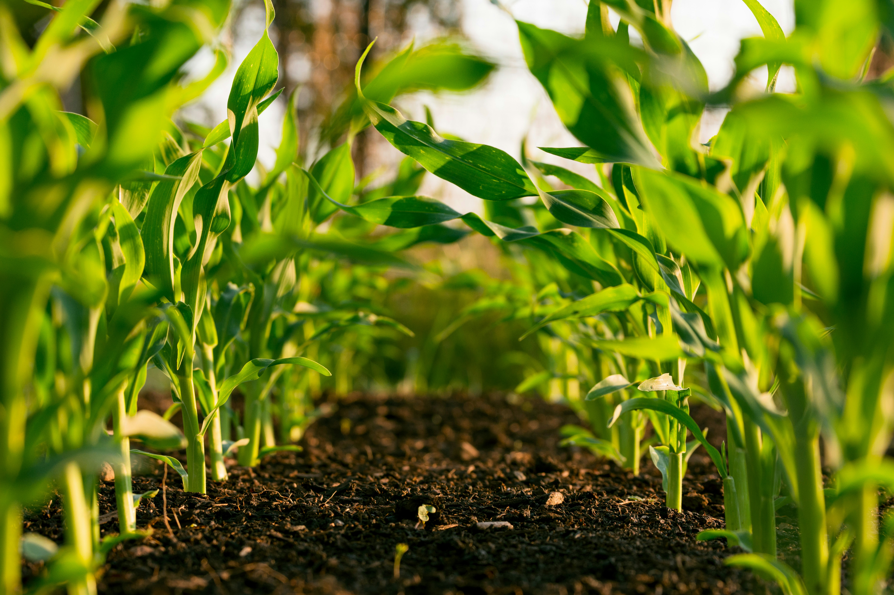
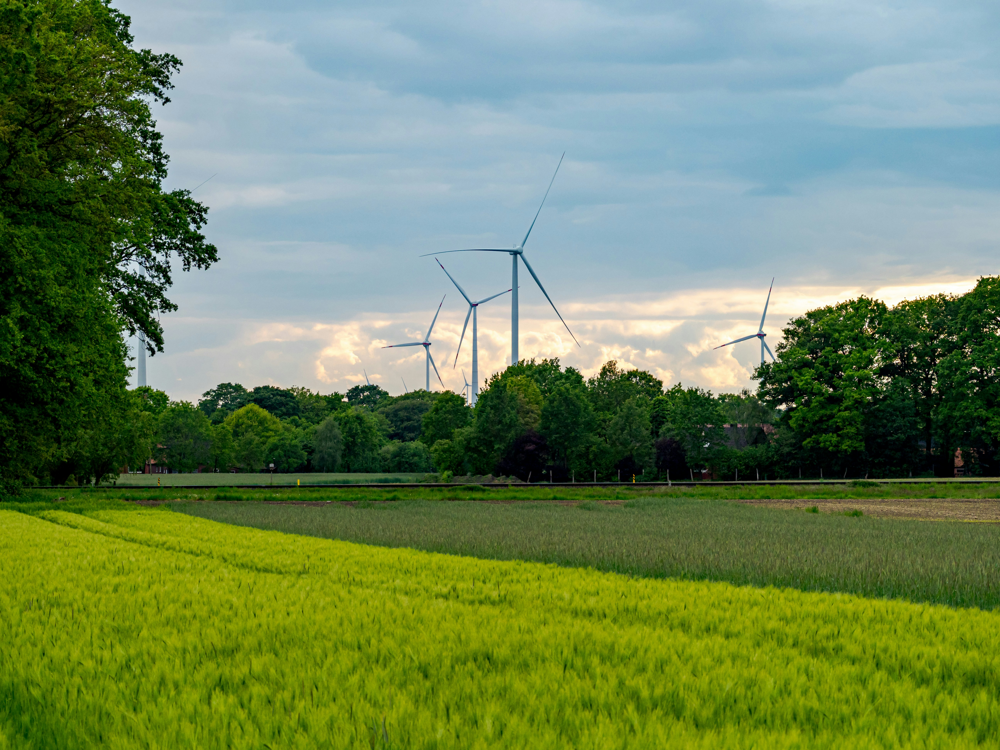
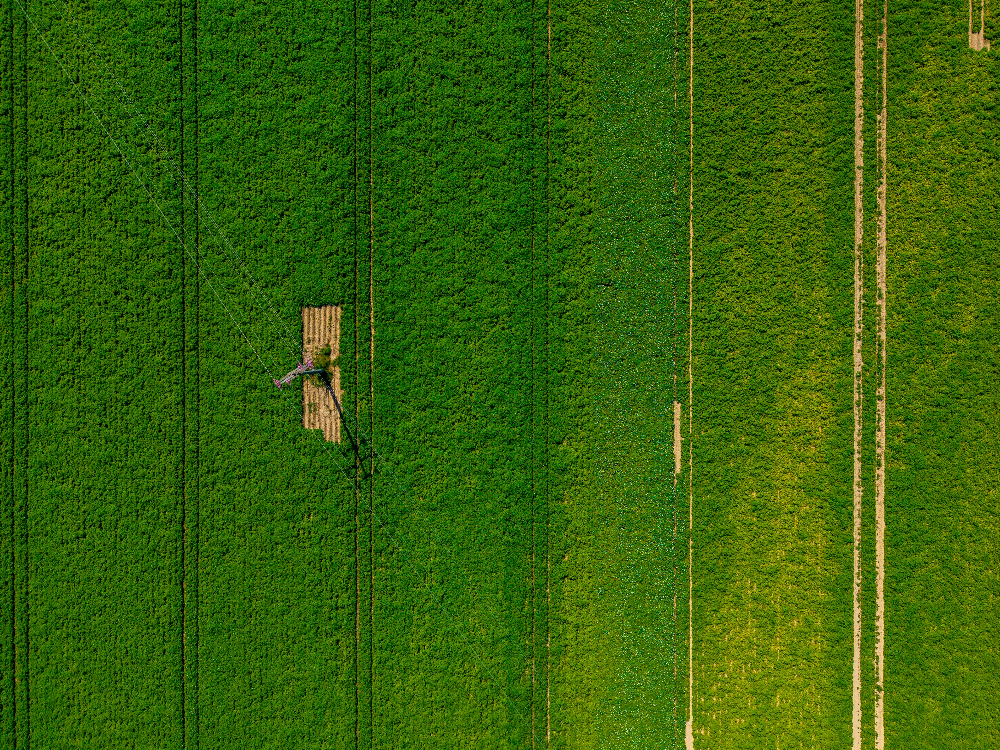
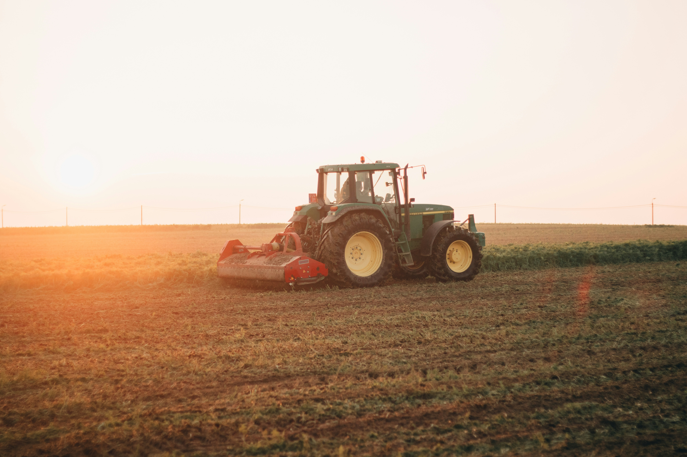

Markets, Technology
Real-time soil and weather sensors are helping growers spot problems early, cut waste, and plan every season with far more confidence than before…

Crops, Technology
Favorable weather and improved planning tools are shaping this year’s harvest. Here is what growers are watching as the fields turn golden…

Crops, Technology
GPS-guided machinery is reducing overlap, saving fuel, and protecting soil structure on farms of every size, from family plots to large estates…

Crops, Markets
From nursery trays to open fields, careful early-stage care leads to stronger plants and more resilient yields throughout the growing season…

Technology
The most successful farms blend new equipment with generations of local experience, creating methods that are efficient and sustainable…
 Michael/
Michael/